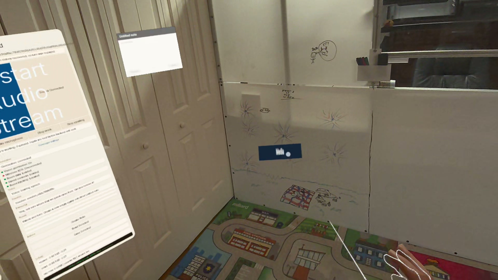
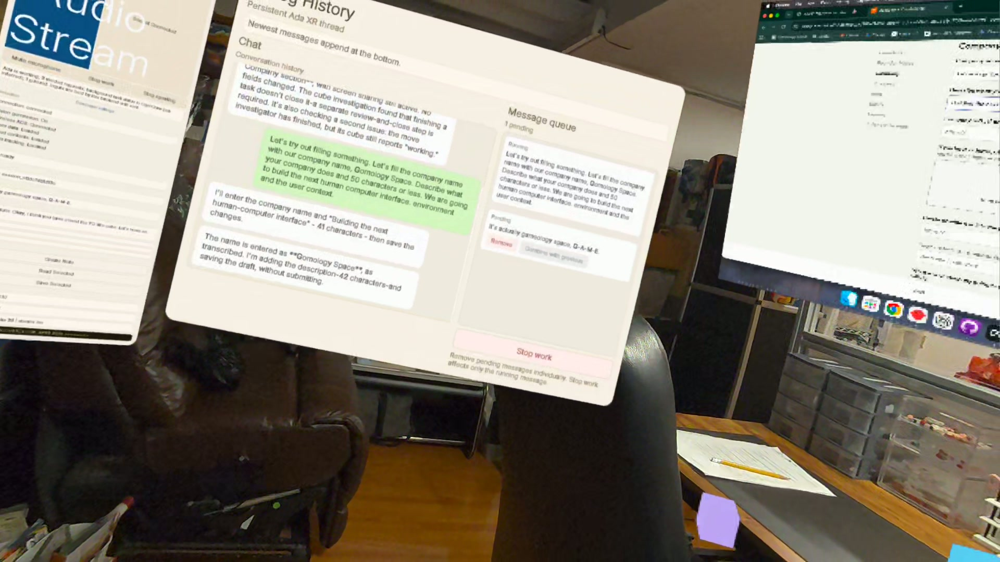
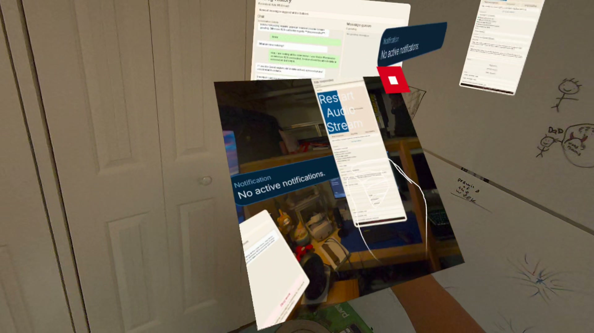
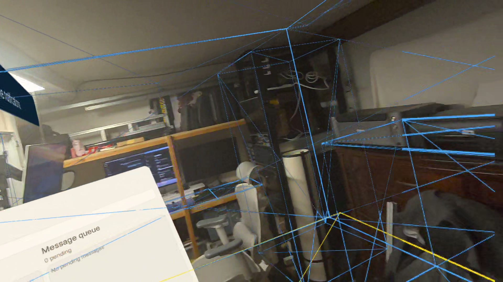
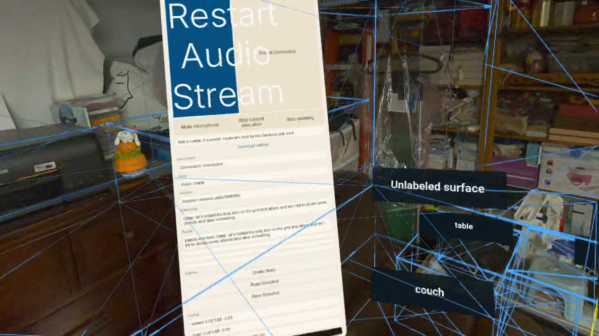
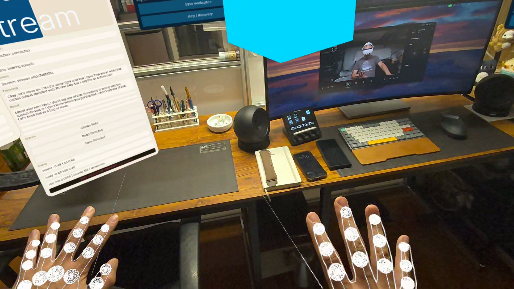

Daily build notes from an open-source project in progress.
Daily build notes from an open-source project in progress.

An empty note and a media window appeared without being asked, and neither could be dismissed. Today's fix: panels that only exist when requested — and the start of note deletion.

From VR, Ada switches Chrome tabs on the Mac, fills our YC draft and helps write the answers — while wireless ADB reconnects itself and failures stop going silent.

Screenshots from the headset land in a movable photo panel, the main window shows vision + ADB + room status at a glance, and Mac screen sharing gets a standalone, billboarded view.

Hold an index finger up and pauses stop cutting my speech off; by evening Ada glides to the whiteboard on command with her ducklings trailing — and the daily log gets a repo that turns one note into posts for six platforms.

Naming, relabeling and deleting the room around me — 8 surfaces deleted, 5 labels kept, saved as workspace revision 5 — plus worker cubes and speech that finally matches chat.

Every WebXR hand overlay on at once — joint markers, radius spheres, aim rays, orientation lines — plus a cyan index-finger ray, the first developer preset, and the browser panel's first build.
The fourth attempt at Ada starts here: the room imports, anchors and saves as a workspace — and the whole attempt gets logged in the open, one day at a time.